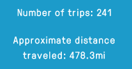
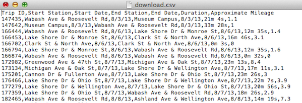
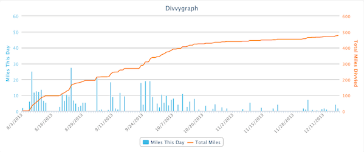

This calculates the approximate milage of each of your Divvy trips. When DivvyBrags is done calculating, it'll show you your top-line stats:
Get your bikeshare data as a CSV file. If you've run "Calculate My Milage," your download will include approximate milage for each trip. If you use Google Docs, you can import as a Google Spreadsheet.
You probably want to see what your trips look like over time. View your data in Divvygraph form:
